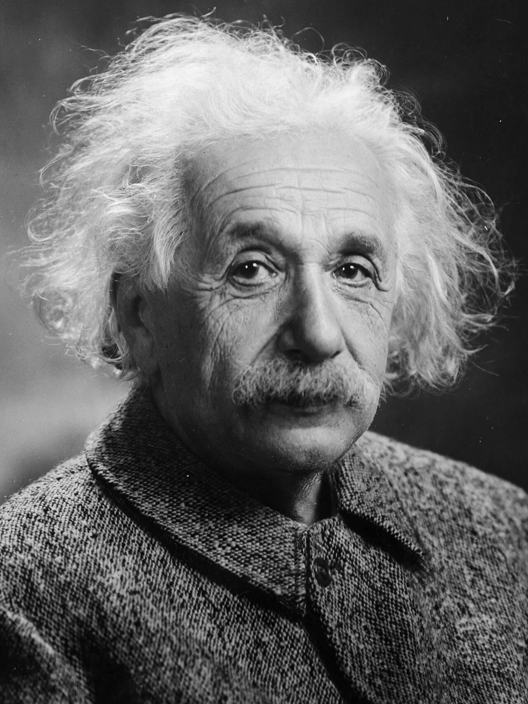
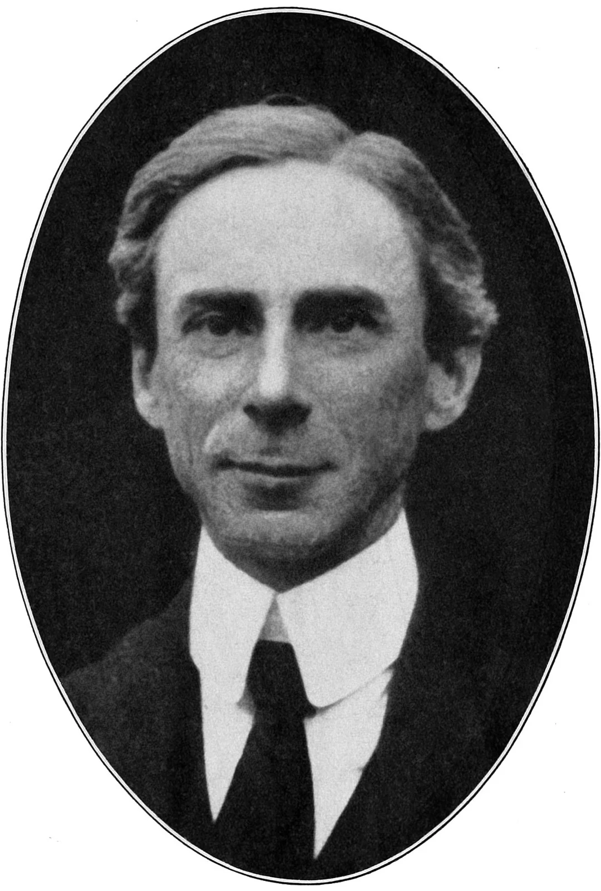
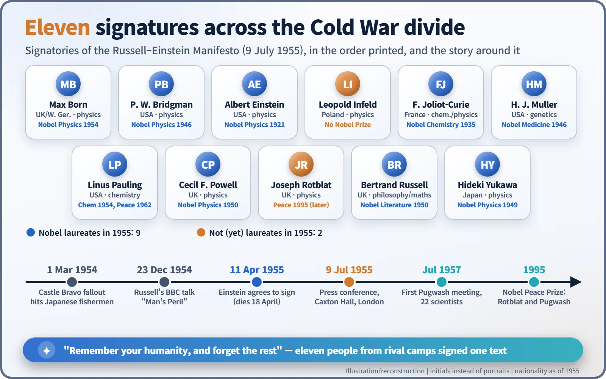
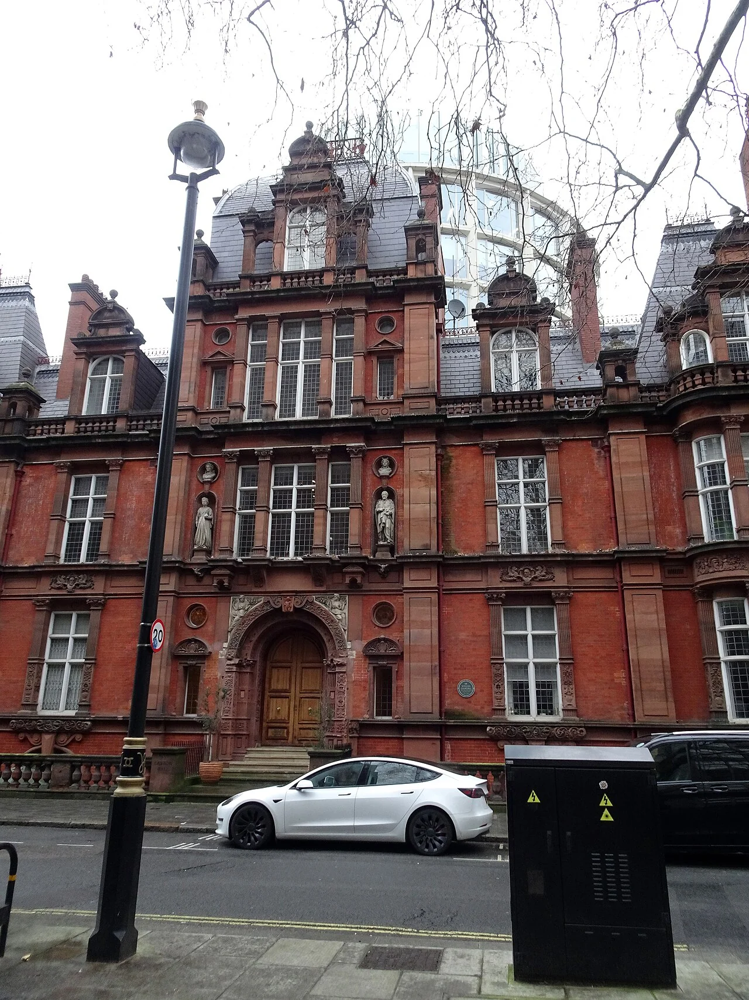

Nuclear History · 145
A Three-Sentence Reply and a Last Signature — The Russell–Einstein Manifesto (1955): "Remember Your Humanity"
Eleven signatures, one question — "Shall we put an end to the human race; or shall mankind renounce war?" — and the Pugwash Conferences that followed.
On 11 April 1955 Albert Einstein sent Bertrand Russell a three-sentence letter agreeing to sign a statement on the danger of hydrogen-bomb war. A week later he was dead. Three months on, the Russell–Einstein Manifesto, signed by eleven scientists and thinkers from both sides of the Cold War, asked the world to "remember your humanity, and forget the rest". It led to the Pugwash Conferences and, forty years later, a Nobel Peace Prize.
A three-sentence reply
"Thank you for your letter of April 5th. I am gladly willing to sign your excellent statement. I also agree with your choice of the prospective signers." That is the whole letter. Albert Einstein (1879–1955) wrote it in Princeton on 11 April 1955 and addressed it to the British philosopher Bertrand Russell (1872–1970). A week later Einstein was dead, and this brief note became one of the last public acts of his life. It is also where the Russell–Einstein Manifesto starts. [3]

Ash from Bikini moves a philosopher
The trigger came a year earlier. On 1 March 1954 the United States tested a hydrogen bomb at Bikini Atoll in the Pacific, and its fallout came down on the crew of a Japanese fishing boat far out at sea. The nuclear age was no longer only about bombs that flatten cities. It was now also about radioactive ash carried by the wind to people who had never been near the target.
Russell was 82. On 23 December 1954 he gave a BBC radio talk called "Man's Peril", and the reaction to it persuaded him to go further. A philosopher speaking alone was not enough. He wanted the scientists who understood these weapons best to speak together, whatever their politics. He drafted a statement, and the first person he sent it to was Einstein. [5]

An announcement on a plane, a letter at a hotel
By Russell's own account, he was on a flight from Rome to Paris when the pilot announced that Einstein had died. The date was 18 April 1955. Without the most important name, Russell felt the whole plan had fallen apart. Then he reached his hotel in Paris and found Einstein's letter agreeing to sign waiting for him. Russell later called it "one of the last acts of his public life." [3]
A common myth needs correcting here. Einstein did not build the atomic bomb. His only involvement was signing the 1939 letter that warned President Roosevelt about the possibility. He took no part in developing the weapon.
Eleven signatures across the divide
In the end there were eleven names. From the United States came Percy Bridgman, Hermann Muller and Linus Pauling. Britain contributed Cecil Powell and Joseph Rotblat. Frédéric Joliot-Curie signed for France, Leopold Infeld for Poland and Hideki Yukawa for Japan. The German-born Max Born also signed, along with Russell and Einstein. A physicist from communist Poland put his name on the same page as American scientists. In 1955 nine of the eleven were already Nobel laureates; only Infeld and Rotblat were not. [1]

The signatories did not all agree on everything. Joliot-Curie added two qualifications. Muller added a reservation that any reduction of armaments should mean "a concomitant balanced reduction of all armaments." Both appear as footnotes to the published text. The signers left their differences in plain view and still endorsed the same conclusion, and that is a large part of why the document carried weight.
"We have to learn to think in a new way"
On 9 July 1955 the manifesto was released at Caxton Hall in London. Russell read it at a press conference chaired by Rotblat, the youngest of the signatories. Rotblat called it "the last message from the man who was the symbol of the great heights the human intellect can reach." [2]

The text sets out its standpoint in its opening lines: "We are speaking on this occasion, not as members of this or that nation, continent or creed, but as human beings, members of the species Man, whose continued existence is in doubt." It then insists: "We have to learn to think in a new way." The question to ask, it says, is not how to win a war for one side but how to prevent a military contest that would be disastrous for everyone.
Quoting what it calls "very good authority", the manifesto states that a bomb could now be built "2,500 times as powerful as that which destroyed Hiroshima." The greater danger, it warns, is radioactive fallout spreading far beyond any destroyed city. Then comes the central question: "Shall we put an end to the human race; or shall mankind renounce war?"
The conclusion is not simply "ban the bomb". The authors argued that any ban agreed in peacetime would be dropped once a war began, because both sides would rush to build hydrogen bombs. An agreement to renounce nuclear weapons was therefore welcome "only as a first step" toward reducing tension. The real aim was to give up war itself. The manifesto ends with its best-known line: "Remember your humanity, and forget the rest." [1]
A seaside village and a prize forty years on
The manifesto also proposed that scientists meet to assess these dangers. A few days after the launch, the industrialist Cyrus Eaton, who was born in Pugwash, Nova Scotia, offered to pay for the meeting there. A first plan to hold it in India was delayed by the Suez Crisis. In July 1957, 22 scientists from both sides of the Iron Curtain gathered in the small Canadian fishing village. That meeting began the Pugwash Conferences on Science and World Affairs, which still meet today. [4]
In 1995 the Nobel Peace Prize went to Joseph Rotblat and the Pugwash Conferences "for their efforts to diminish the part played by nuclear arms in international politics and, in the longer run, to eliminate such arms." Forty years after chairing the Caxton Hall press conference, the physicist who had left the Manhattan Project before it was finished shared the prize. [6]
The manifesto that began with a three-sentence reply is remembered as a symbolic moment: the people whose knowledge had made these weapons possible began to speak together about their responsibility for what followed.